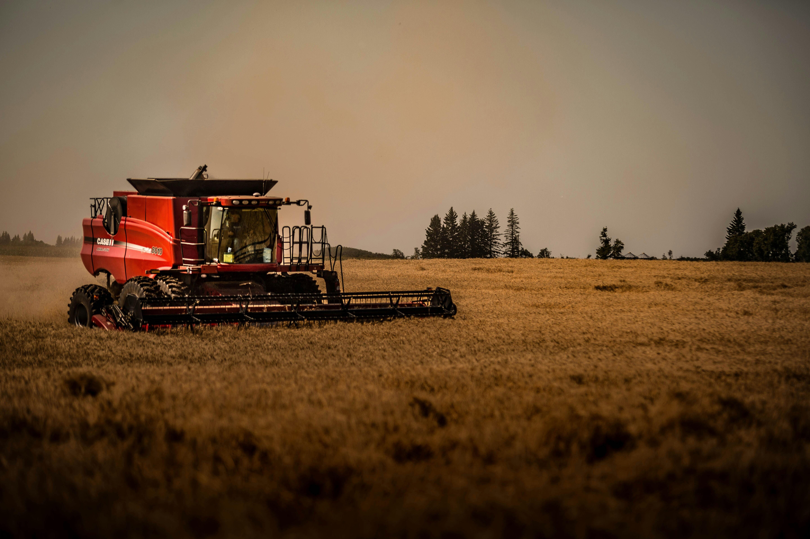

Raiz forte, futuro consciente
O equilíbrio entre produzir e preservar começa aqui
O agronegócio desempenha um papel fundamental na sociedade, sendo responsável pela produção de alimentos que chegam diariamente à mesa de milhões de pessoas. No entanto, com o crescimento da produção, surge também a necessidade de preservar os recursos naturais e garantir que o desenvolvimento não comprometa o futuro do meio ambiente. Neste contexto, o conceito de sustentabilidade no campo se torna essencial. A adoção de práticas conscientes, o uso equilibrado da tecnologia e o cuidado com o solo e os recursos naturais são fatores que permitem unir produtividade e preservação. Este site tem como objetivo apresentar, de forma interativa, como é possível alcançar esse equilíbrio, mostrando que o agro pode ser forte, eficiente e, ao mesmo tempo, responsável com o planeta.

Foto por Andrew Draper
Você sabia?
O Brasil é um dos únicos países no mundo capaz de colher até três safras no mesmo ano em certas áreas, devido às condições climáticas favoráveis. Essa prática, comum com culturas como soja, milho e feijão, permite rotação de culturas, maior rentabilidade e eficiência no uso de insumos, com a terceira safra já sendo uma realidade.
Aqui estão outras curiosidades:
- Superpoder do Agro: A produção agrícola brasileira alimenta cerca de 1 bilhão de pessoas no mundo anualmente.
- Laranja Brasileira: O Brasil é responsável por mais de 70% das exportações mundiais de suco de laranja.
- Rebanho Gigante: Existem mais bois do que pessoas no Brasil, totalizando um rebanho de mais de 230 milhões de cabeças.
- Agricultura Familiar: Apesar da força do agronegócio, a agricultura familiar gera cerca de 77% dos empregos no setor agrícola no Brasil.
- Cultura Espacial: Pesquisas indicam que tubérculos como a batata-doce e a mandioca podem ser cultivados em Marte.
Quer saber se você tem o que é preciso para ser um produtor rural sustentável? 🎮 Teste suas decisões no campo e descubra qual tipo de produtor você seria no quiz acima!